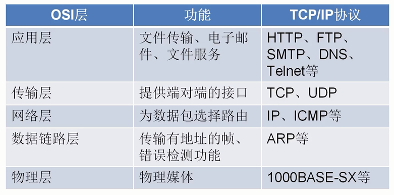
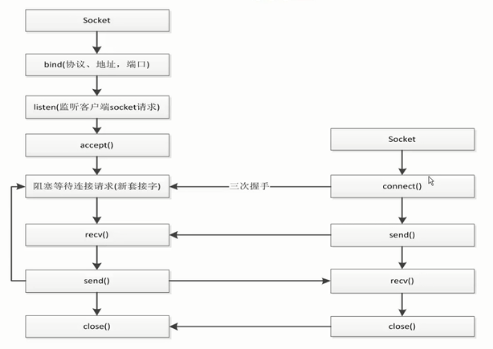

五层网络模型

操作系统给我们提供了一个socket接口, 用于实现TCP和UDP, 它不属于任何协议！
socket编程

django的socket是存在于uwsgi中！
使用多线程实现多用户连接
""" client端 """
import socket
client = socket.socket(socket.AF_INET,socket.SOCK_STREAM)
client.connect(('127.0.0.1', 8001))
while True:
re_data = input()
client.send(re_data.encode("utf8"))
data = client.recv(1024)
print(data.decode("utf8"))
# client.send("whw".encode("utf8"))
# data = client.recv(1024)
# print (data.decode("utf8"))
# client.close()
""" server端 """
import socket
import threading
server = socket.socket(socket.AF_INET,socket.SOCK_STREAM)
# 在绑定前调用setsockopt让套接字允许地址重复利用
server.setsockopt(socket.SOL_SOCKET, socket.SO_REUSEADDR, 1)
server.bind(('0.0.0.0', 8001))
server.listen()
def handle_sock(sock, addr):
while True:
data = sock.recv(1024)
print(data.decode("utf8"))
re_data = input()
sock.send(re_data.encode("utf8"))
#获取从客户端发送的数据
#一次获取1k的数据
while True:
sock, addr = server.accept()
# 用线程去处理新接收的连接(用户)
client_thread = threading.Thread(target=handle_sock, args=(sock, addr))
client_thread.start()
# data = sock.recv(1024)
# print(data.decode("utf8"))
# re_data = input()
# sock.send(re_data.encode("utf8"))
# server.close()
# sock.close()
socket模拟http请求
- 对url解析得到host和path(调用urllib)
- 使用socket进行连接
- 发送get请求, 然后接受数据
- 对数据进行解析处理
- 最后断开socket连接
# requests -> urlib -> socket
import socket
from urllib.parse import urlparse
def get_url(url):
# 通过socket请求html
url = urlparse(url)
host = url.netloc
path = url.path
if path == "":
path = "/"
# 建立socket连接
client = socket.socket(socket.AF_INET, socket.SOCK_STREAM)
# client.setblocking(False)
client.connect((host, 80)) #阻塞不会消耗cpu
# 不停的询问连接是否建立好， 需要while循环不停的去检查状态
# 做计算任务或者再次发起其他的连接请求
client.send("GET {} HTTP/1.1\r\nHost:{}\r\nConnection:close\r\n\r\n".format(path, host).encode("utf8"))
data = b""
while True:
d = client.recv(1024)
if d:
data += d
else:
break
data = data.decode("utf8")
html_data = data.split("\r\n\r\n")[1]
print(html_data)
client.close()
if __name__ == "__main__":
import time
start_time = time.time()
for url in range(20):
url = "http://shop.projectsedu.com/goods/{}/".format(url)
get_url(url)
print(time.time()-start_time)
全局解释器锁——GIL
GIL的全称是Global Interpreter Lock
- python中一个线程对应于c语言中的一个线程
- GIL使得同一个时刻只有一个线程在一个cpu上执行字节码, 无法将多个线程映射到多个cpu上执行
- GIL会根据执行的字节码行数以及时间片释放gil, gil在遇到io的操作时候主动释放 —— GIL无法保证线程绝对安全
GIL的特点
-
Python在多线程下，每个线程的执行方式为：
-
获取GIL
- 执行代码直到sleep或者是python虚拟机将其挂起
- 释放GIL
一个CPU只能执行一个线程, 例如一个CPU 有三个线程, 首先线程A执行, 然后线程A达到释放条件进行释放GIL, 线程B和线程C进行竞争GIL, 谁抢到GIL, 继续执行。
GIL无法保证线程绝对安全
total = 0
def add():
global total
for i in range(1000000):
total += 1
def desc():
global total
for i in range(1000000):
total -= 1
import threading
thread1 = threading.Thread(target=add)
thread2 = threading.Thread(target=desc)
thread1.start()
thread2.start()
thread1.join()
thread2.join()
print(total)
"""
每次的结果都不一样:GIL会在执行完一定长度的字节码后自动释放，一个线程不一定会一直占GIL
"""
多线程编程
实现线程的2种方式：
# 对于io操作来说，多线程和多进程性能差别不大
import time
import threading
# 实现方式1.通过Thread类实例化
def get_detail_html(url):
print("get detail html started")
time.sleep(2)
print("get detail html end")
def get_detail_url(url):
print("get detail url started")
time.sleep(4)
print("get detail url end")
# 实现方式2. 通过继承Thread来实现多线程
class GetDetailHtml(threading.Thread):
def __init__(self, name):
super().__init__(name=name)
def run(self):
print("get detail html started")
time.sleep(2)
print("get detail html end")
class GetDetailUrl(threading.Thread):
def __init__(self, name):
super().__init__(name=name)
def run(self):
print("get detail url started")
time.sleep(4)
print("get detail url end")
if __name__ == "__main__":
# 方式1
# thread1 = threading.Thread(target=get_detail_html,args=("",))
# thread2 = threading.Thread(target=get_detail_html,args=("",))
# 方式2
thread1 = GetDetailHtml("get_detail_html")
thread2 = GetDetailUrl("get_detail_url")
# 当主线程退出的时候， 子线程kill掉 —— 设置守护线程！在start之前写！
# 只将thread2设置为守护线程的话，不会主线程执行完也会把thread2停掉！thread2的end不会打印！
thread2.setDaemon(True) # 守护线程
start_time = time.time()
thread1.start()
thread2.start()
# 等待2个线程执行完成最后才执行打印
thread1.join()
thread2.join()
print ("last time: {}".format(time.time()-start_time))
线程间通信:共享变量与Queue *
线程间通信1：共享变量——不推荐
- 共享变量
使用一个全局变量, 然后不同线程可以访问并修改这个变量！—— 记得加锁！
# 1. 线程通信方式- 共享变量
import time
from threading import Thread,RLock
# 全局的变量
detail_url_list = list()
# 1. 生产者当生产10个url以后就就等待，保证detail_url_list中最多只有十个url
# 2. 当url_list为空的时候，消费者就暂停
def get_detail_html(lock):
# 爬取文章详情页
# 一直爬取
while True:
if len(detail_url_list):
lock.acquire()
if len(detail_url_list):
url = detail_url_list.pop()
lock.release()
# for url in detail_url_list:
print("get detail html started")
time.sleep(2)
print("get detail html end")
else:
lock.release()
time.sleep(1)
def get_detail_url(lock):
# 一直爬取
while True:
print("get detail url started")
time.sleep(4)
for i in range(20):
lock.acquire()
if len(detail_url_list) >= 10:
lock.release()
time.sleep(1)
else:
detail_url_list.append("http://projectsedu.com/{id}".format(id=i))
lock.release()
print("get detail url end")
if __name__ == "__main__":
lock = RLock()
thread_detail_url = Thread(target=get_detail_url, args=(lock,))
for i in range(10):
html_thread = Thread(target=get_detail_html, args=(lock,))
html_thread.start()
start_time = time.time()
线程间通信2：通过queue进行线程间同步——推荐
# 通过queue的方式进行线程间同步
import time
import threading
from queue import Queue
def get_detail_html(queue):
#爬取文章详情页
while True:
# 如果队列为空会一直阻塞
# get —— 线程安全：每家锁但是实际使用的是deque，deque是线程安全的
url = queue.get()
# for url in detail_url_list:
print("get detail html started")
time.sleep(2)
print("get detail html end")
def get_detail_url(queue):
# 爬取文章列表页
while True:
print("get detail url started")
time.sleep(4)
for i in range(20):
# put —— 线程安全：加了锁
queue.put("http://projectsedu.com/{id}".format(id=i))
print("get detail url end")
if __name__ == "__main__":
# 设置一个最大值
detail_url_queue = Queue(maxsize=1000)
thread_detail_url = threading.Thread(target=get_detail_url, args=(detail_url_queue,))
for i in range(10):
html_thread = threading.Thread(target=get_detail_html, args=(detail_url_queue,))
html_thread.start()
start_time = time.time()
# 这两个方法成对使用
detail_url_queue.task_done()
detail_url_queue.join()
#当主线程退出的时候， 子线程kill掉
print ("last time: {}".format(time.time()-start_time))
线程同步 *
一个经典的问题
### 假设有2个线程！一个加一个减！
def add(a):
a += 1
def desc(a):
a -= 1
# add的过程
"""
1、load a a = 0
2、load 1 1
3、+ +1
4、赋值给a —— a=1
"""
# desc的过程
"""
1、load a a = 0
2、load 1 1
3、- -1
4、赋值给a —— a=-1
"""
# 问题
"""
第4步：两个赋值语句有一个先运行一个后运行，a要么是1要么是-1，但是就是不等于0！
但是我们期望两个线程执行后结果为0！
"""
import dis
print(dis.dis(add))
print(dis.dis(desc))
"""
4 0 LOAD_FAST 0 (a)
2 LOAD_CONST 1 (1)
4 INPLACE_ADD
6 STORE_FAST 0 (a)
8 LOAD_CONST 0 (None)
10 RETURN_VALUE
None
7 0 LOAD_FAST 0 (a)
2 LOAD_CONST 1 (1)
4 INPLACE_SUBTRACT
6 STORE_FAST 0 (a)
8 LOAD_CONST 0 (None)
10 RETURN_VALUE
None
"""
Lock与Rlock
在同一个线程里面，可以连续调用多次acquire， 一定要注意acquire的次数要和release的次数相等！
获取锁与释放锁需要时间，会影响性能。
锁会引起死锁acquire多次但是不释放(release)。
import threading
from threading import Lock, RLock, Condition
# 在同一个线程里面，可以连续调用多次acquire， 一定要注意acquire的次数要和release的次数相等
total = 0
lock = RLock()
def add():
# 1. dosomething1
# 2. io操作
# 1. dosomething3
global lock
global total
for i in range(1000000):
# 获取锁
lock.acquire()
lock.acquire()
total += 1
# 释放锁
lock.release()
lock.release()
def desc():
global total
global lock
for i in range(1000000):
# 获取锁
lock.acquire()
total -= 1
# 释放锁
lock.release()
thread1 = threading.Thread(target=add)
thread2 = threading.Thread(target=desc)
thread1.start()
thread2.start()
thread1.join()
thread2.join()
print(total) # 0
# 1. 用锁会影响性能
# 2. 锁会引起死锁
# 死锁的情况 A（a，b）
"""
A(a、b)
acquire (a)
acquire (b)
B(a、b)
acquire (a)
acquire (b)
"""
threading.Condition
用于复杂的线程间同步的锁：条件变量
import threading
# 通过condition完成协同读诗
class XiaoAi(threading.Thread):
def __init__(self, cond):
super().__init__(name="小爱")
self.cond = cond
def run(self):
with self.cond:
self.cond.wait()
print("{} : 在 ".format(self.name))
self.cond.notify()
self.cond.wait()
print("{} : 好啊 ".format(self.name))
self.cond.notify()
self.cond.wait()
print("{} : 君住长江尾 ".format(self.name))
self.cond.notify()
self.cond.wait()
print("{} : 共饮长江水 ".format(self.name))
self.cond.notify()
self.cond.wait()
print("{} : 此恨何时已 ".format(self.name))
self.cond.notify()
self.cond.wait()
print("{} : 定不负相思意 ".format(self.name))
self.cond.notify()
class TianMao(threading.Thread):
def __init__(self, cond):
super().__init__(name="天猫精灵")
self.cond = cond
def run(self):
with self.cond:
print("{} : 小爱同学 ".format(self.name))
self.cond.notify()
self.cond.wait()
print("{} : 我们来对古诗吧 ".format(self.name))
self.cond.notify()
self.cond.wait()
print("{} : 我住长江头 ".format(self.name))
self.cond.notify()
self.cond.wait()
print("{} : 日日思君不见君 ".format(self.name))
self.cond.notify()
self.cond.wait()
print("{} : 此水几时休 ".format(self.name))
self.cond.notify()
self.cond.wait()
print("{} : 只愿君心似我心 ".format(self.name))
self.cond.notify()
self.cond.wait()
if __name__ == "__main__":
# from concurrent import futures
cond = threading.Condition()
xiaoai = XiaoAi(cond)
tianmao = TianMao(cond)
# 启动顺序很重要
# 在调用with cond之后才能调用wait或者notify方法
# condition有两层锁， 一把底层锁会在线程调用了wait方法的时候释放， 上面的锁会在每次调用wait的时候分配一把并放入到cond的等待队列中，等到notify方法的唤醒
xiaoai.start()
tianmao.start()
threading.Semaphore
用于控制进入数量的锁：信号量
# Semaphore 是用于控制进入数量的锁
# 文件， 读、写， 写一般只是用于一个线程写，读可以允许有多个
# 做爬虫：限制爬虫的并发数量
import threading
import time
class HtmlSpider(threading.Thread):
def __init__(self, url, sem):
super().__init__()
self.url = url
self.sem = sem
def run(self):
time.sleep(2)
print("got html text success")
self.sem.release()
class UrlProducer(threading.Thread):
def __init__(self, sem):
super().__init__()
self.sem = sem
def run(self):
for i in range(20):
self.sem.acquire()
html_thread = HtmlSpider("https://baidu.com/{}".format(i), self.sem)
html_thread.start()
if __name__ == "__main__":
sem = threading.Semaphore(3)
url_producer = UrlProducer(sem)
url_producer.start()
线程池
为什么要用线程池
1、主线程中可以获取某一个线程的状态或者某一个任务的状态，以及返回值
2、当一个线程完成的时候我们主线程能立即知道
3、futures可以让多线程和多进程编码接口一致
初级的写法
from concurrent.futures import ThreadPoolExecutor
import time
def get_html(times):
time.sleep(times)
print("get page {} success".format(times))
return times
executor = ThreadPoolExecutor(max_workers=2)
# 通过submit函数提交执行的函数到线程池中, submit 是立即返回
task1 = executor.submit(get_html, (3))
task2 = executor.submit(get_html, (2))
# done方法用于判定某个任务是否完成
print(task1.done())
print(task2.cancel()) # 因为上面线程池设置的是2正好能同时放在线程池中，所以这里cancel的话是False
time.sleep(3)
print(task1.done())
#result方法可以获取task的执行结果
print(task1.result())
获取已经成功的task的返回——as_completed：推荐
import time
from concurrent.futures import ThreadPoolExecutor, as_completed
def get_html(times):
time.sleep(times)
print("get page {} success".format(times))
return times
executor = ThreadPoolExecutor(max_workers=2)
urls = [3,2,4]
# 列表推导式
all_task = [executor.submit(get_html, (url)) for url in urls]
# wait(all_task, return_when=FIRST_COMPLETED)
# 要获取已经成功的task的返回
for future in as_completed(all_task):
data = future.result()
print("get {} page".format(data))
获取已经成功的task的返回——线程池对象的map
import time
from concurrent.futures import ThreadPoolExecutor
def get_html(times):
time.sleep(times)
print("get page {} success".format(times))
return times
executor = ThreadPoolExecutor(max_workers=2)
# 要获取已经成功的task的返回
urls = [3,2,4]
# 列表推导式
all_task = [executor.submit(get_html, (url)) for url in urls]
# 通过executor的map获取已经完成的task的值
for data in executor.map(get_html, urls):
print("get {} page".format(data))
wait——等待某些事件发生完再执行
import time
from concurrent.futures import ThreadPoolExecutor,wait,FIRST_COMPLETED
def get_html(times):
time.sleep(times)
print("get page {} success".format(times))
return times
executor = ThreadPoolExecutor(max_workers=2)
# 要获取已经成功的task的返回
urls = [3,2,4]
# 列表推导式
all_task = [executor.submit(get_html, (url)) for url in urls]
# 阻塞主线程，等到所有的线程执行完毕后执行下面的
wait(all_task)
"""
# 第一个task执行完之后执行下面的！
wait(all_task,return_when=FIRST_COMPLETED)
"""
print("main")
# 通过executor的map获取已经完成的task的值
for data in executor.map(get_html, urls):
print("get {} page".format(data))
多进程与多线程的对比
耗cpu的操作，用多进程编程。
对于io操作来说， 使用多线程编程。
进程切换代价要高于线程！
1、对于耗费cpu的操作，多进程优于多线程
- 多进程
import time
from concurrent.futures import ThreadPoolExecutor, as_completed
from concurrent.futures import ProcessPoolExecutor
# 1. 对于耗费cpu的操作，多进程优于多线程
def fib(n):
if n<=2:
return 1
return fib(n-1)+fib(n-2)
if __name__ == "__main__":
""" 多进程 """
### with上下文管理 ———— 进城池
with ProcessPoolExecutor(3) as executor:
all_task = [executor.submit(fib, (num)) for num in range(25,35)]
start_time = time.time()
# as_completed方法
for future in as_completed(all_task):
data = future.result()
print("exe result: {}".format(data))
print("last time is: {}".format(time.time()-start_time))
""" last time is: 2.5451011657714844 """
- 多线程
import time
from concurrent.futures import ThreadPoolExecutor, as_completed
from concurrent.futures import ProcessPoolExecutor
# 1. 对于耗费cpu的操作，多进程优于多线程
def fib(n):
if n<=2:
return 1
return fib(n-1)+fib(n-2)
if __name__ == "__main__":
""" 多进程 """
### with上下文管理 ———— 线程池
with ThreadPoolExecutor(3) as executor:
all_task = [executor.submit(fib, (num)) for num in range(25,35)]
start_time = time.time()
# as_completed方法
for future in as_completed(all_task):
data = future.result()
print("exe result: {}".format(data))
print("last time is: {}".format(time.time()-start_time))
""" last time is: 3.895350217819214 """
2、对于io操作来说，多线程优于多进程——服务器开多线程的开销要远远小于开多进程的开销！
- 多进程
import time
from concurrent.futures import ThreadPoolExecutor, as_completed
from concurrent.futures import ProcessPoolExecutor
# 2. 对于io操作来说，多线程优于多进程
def random_sleep(n):
# 使用sleep模拟io操作
time.sleep(n)
return n
if __name__ == "__main__":
### with上下文管理 ———— 多进程
with ProcessPoolExecutor(3) as executor:
all_task = [executor.submit(random_sleep, (num)) for num in [2]*30]
start_time = time.time()
# as_completed方法
for future in as_completed(all_task):
data = future.result()
print("exe result: {}".format(data))
print("last time is: {}".format(time.time()-start_time))
""" last time is: 20.01831293106079 """
- 多线程
import time
from concurrent.futures import ThreadPoolExecutor, as_completed
from concurrent.futures import ProcessPoolExecutor
# 2. 对于io操作来说，多线程优于多进程
def random_sleep(n):
# 使用sleep模拟io操作
time.sleep(n)
return n
if __name__ == "__main__":
### with上下文管理 ———— 多进程
with ThreadPoolExecutor(3) as executor:
all_task = [executor.submit(random_sleep, (num)) for num in [2]*30]
start_time = time.time()
# as_completed方法
for future in as_completed(all_task):
data = future.result()
print("exe result: {}".format(data))
print("last time is: {}".format(time.time()-start_time))
""" last time is: 20.006372890472412 """
多进程编程
fork
import os
# fork只能用于linux/unix中
# 运行fork会直接fork一个子进程！—— 所以会打印2次whw！—— 子进程会把夫进程的数据完全拷贝一份！
# 如果把打印放在fork之前只会打印1次
pid = os.fork()
print("whw")
if pid == 0:
print('子进程 {} ，父进程是： {}.' .format(os.getpid(), os.getppid()))
else:
print('我是父进程：{}.'.format(pid))
"""
whw
我是父进程：3001.
whw
子进程 3001 ，父进程是： 3000.
"""
重要基础知识点
自己之前总结过的博客：
进程池 —— 多进程编程的首选
与线程池的用法几乎一致！
multiprocessing模块——偏向底层
简单用法
import multiprocessing
# 多进程编程
import time
def get_html(n):
time.sleep(n)
print("sub_progress success")
return n
if __name__ == "__main__":
# 注意2后面加逗号！
progress = multiprocessing.Process(target=get_html, args=(2,))
print(progress.pid) # start之前为None
progress.start()
print(progress.pid) # 3036
progress.join()
print("main progress end")
multiprocessing的进程池
import multiprocessing
# 多进程编程
import time
def get_html(n):
time.sleep(n)
print("sub_progress success")
return n
if __name__ == "__main__":
# 使用进程池
pool = multiprocessing.Pool(multiprocessing.cpu_count())
# 提交任务 —— 会有一个返回值
result = pool.apply_async(get_html, args=(3,))
# 等待所有任务完成
pool.close() # 调用join之前必须close，使pool不再接收任何任务
pool.join()
print(result.get())
"""
sub_progress success
3
"""
imap与imap_unordered方法
import multiprocessing
# 多进程编程
import time
def get_html(n):
time.sleep(n)
print("sub_progress success")
return n
if __name__ == "__main__":
# 使用进程池
pool = multiprocessing.Pool(multiprocessing.cpu_count())
""" # imap方法：按照指定顺序打印 """
# for result in pool.imap(get_html, [1,5,3]):
# print("{} sleep success".format(result))
"""
sub_progress success
1 sleep success
sub_progress success
sub_progress success
5 sleep success
3 sleep success
"""
""" # imap_unordered方法：谁先完成就先打印谁 """
for result in pool.imap_unordered(get_html, [1,5,3]):
print("{} sleep success".format(result))
"""
sub_progress success
1 sleep success
sub_progress success
3 sleep success
sub_progress success
5 sleep success
"""
进程间通信—Queue/Pipe/Manager
由于多进程之间数据是不共享而是完全隔离的！
所以共享全局变量不能适用于多进程编程，可以适用于多线程！
Queue实现进程间通信
import time
from multiprocessing import Process, Queue
# 生产者
def producer(queue):
queue.put("a")
time.sleep(2)
# 消费者
def consumer(queue):
time.sleep(2)
data = queue.get()
print(data)
if __name__ == "__main__":
queue = Queue(10)
my_producer = Process(target=producer, args=(queue,))
my_consumer = Process(target=consumer, args=(queue,))
my_producer.start()
my_consumer.start()
my_producer.join()
my_consumer.join()
"""
a
"""
multiprocessing中的Queue不能用于Pool进程池!
import time
from multiprocessing import Process, Queue, Pool
def producer(queue):
queue.put("a")
time.sleep(2)
def consumer(queue):
time.sleep(2)
data = queue.get()
print(data)
if __name__ == "__main__":
queue = Queue(10)
# Pool的进程池
pool = Pool(2)
pool.apply_async(producer, args=(queue,))
pool.apply_async(consumer, args=(queue,))
pool.close()
pool.join()
"""
没有任何输出！！！
"""
Pool中的进程间通信需要使用manager中的queue！
import time
from multiprocessing import Pool, Manager
def producer(queue):
queue.put("a")
time.sleep(2)
def consumer(queue):
time.sleep(2)
data = queue.get()
print(data)
if __name__ == "__main__":
queue = Manager().Queue(10)
# Pool的进程池
pool = Pool(2)
pool.apply_async(producer, args=(queue,))
pool.apply_async(consumer, args=(queue,))
pool.close()
pool.join()
"""
a
"""
通过Pipe实现进程间通信——Pipe只能适用于两个进程但它的性能高于Queue
import time
from multiprocessing import Process,Pipe
def producer(pipe):
pipe.send("whw")
def consumer(pipe):
print(pipe.recv())
if __name__ == "__main__":
# 实例化
recevie_pipe, send_pipe = Pipe()
# pipe只能适用于两个进程
my_producer= Process(target=producer, args=(send_pipe, ))
my_consumer = Process(target=consumer, args=(recevie_pipe,))
my_producer.start()
my_consumer.start()
my_producer.join()
my_consumer.join()
"""
whw
"""
进程间通信的其他方式——共享内存：但一定要注意数据的同步！
from multiprocessing import Process, Manager
# 共享一个字典
def add_data(p_dict, key, value):
p_dict[key] = value
if __name__ == "__main__":
progress_dict = Manager().dict()
from queue import PriorityQueue
first_progress = Process(target=add_data, args=(progress_dict, "whw", 22))
second_progress = Process(target=add_data, args=(progress_dict, "naruto", 23))
first_progress.start()
second_progress.start()
first_progress.join()
second_progress.join()
print(progress_dict)
"""
{'whw': 22, 'naruto': 23}
"""